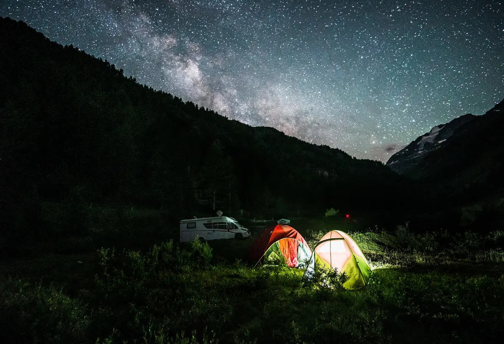

Mejor estación de energía portátil por menos de 500 € (2026)
Si tienes 500 € y quieres una sola estación, la Jackery Explorer 500 v2 es la que compraríamos: 512 Wh, 500 W continuos y 5,7 kg, con batería LiFePO4 y 5 años de garantía. Si manda el peso, la Bluetti Elite 30 V2 (288 Wh y 4,3 kg). Si quieres empezar pequeño y ampliar después, la EcoFlow River 3 Plus, que llega a 858 Wh con una batería extra. Ninguna de las tres mueve un hervidor a plena potencia: para eso hace falta la clase de 1 kWh y 1.800 W, que en las tiendas oficiales empieza justo por encima de 500 €.
Contiene enlaces de afiliado: si compras a través de ellos recibimos una comisión sin coste adicional para ti. Cómo decidimos nuestras recomendaciones.
Ver precio actual de la Jackery Explorer 500 v2
Cómo las hemos elegido
En Amazon hay decenas de estaciones por menos de 500 €. Para entrar en esta guía, cada una tenía que cumplir cuatro condiciones:
- Batería LiFePO4 con las protecciones del BMS documentadas. Es el filtro de toda la web, explicado en la metodología.
- Menos de 500 € en la tienda oficial española de la marca el 27 de septiembre de 2026, sin contar packs con panel.
- Inversor de onda senoidal pura a 230 V y función SAI declarada por el fabricante.
- Ficha técnica completa y garantía atendida en España.
Lo que hemos descartado y por qué:
- Las de 1 kWh de EcoFlow, Jackery y Bluetti, que en sus tiendas oficiales se quedan justo por encima de 500 €. Más abajo explicamos cuándo compensa estirar.
- La DJI Power 500: cumple todo, pero estaba agotada en la tienda oficial española el día de la revisión.
- Estaciones con batería NMC, aunque sean más baratas: suelen aguantar varias veces menos ciclos que una LiFePO4.
- Fichas que no dejan comprobar lo básico: capacidad real, potencia continua frente a pico y quién atiende la garantía en España.
Las tres, frente a frente
| Especificación | Jackery Explorer 500 v2 | Bluetti Elite 30 V2 | EcoFlow River 3 Plus |
|---|---|---|---|
| Capacidad | 512 Wh | 288 Wh | 286 Wh |
| Ampliación de batería | No | No | Sí, hasta 858 Wh |
| Salida continua | 500 W | 600 W | 600 W |
| Pico o modo resistivo | 1.000 W de pico | 1.500 W (Power Lifting) | 1.200 W (X-Boost) |
| Ciclos | 6.000 al 70 % | Más de 3.000 (sin umbral) | 3.000 al 80 % |
| Peso | 5,7 kg | 4,3 kg | 4,7 kg |
| Energía por kilo | 90 Wh/kg | 67 Wh/kg | 61 Wh/kg |
| Carga desde la red | 1,3 h | 70 min | 60 min |
| Entrada solar máxima | 200 W | 200 W | 220 W |
| USB-C más potente | 100 W | 140 W | 100 W |
| Conmutación como SAI | 10 ms o menos | 10 ms o menos | Menos de 10 ms |
Fichas oficiales de cada fabricante, revisadas el 27 de septiembre de 2026. Carga desde la red: del 0 al 100 %. Los ciclos no se comparan entre sí porque cada marca los mide a un porcentaje de capacidad distinto.
Jackery Explorer 500 v2: la que compraríamos
Es la única de las tres que pasa del medio kilovatio-hora, y lo hace con 5,7 kg: 90 Wh por kilo, más que cualquiera de las dos «ligeras». Dicho de otra forma, por kilo y medio más que la Bluetti te llevas casi el doble de energía, y eso es lo que decide si la nevera llega a la mañana siguiente.
Tres datos de su ficha pesan más que la capacidad. Promete 6.000 ciclos hasta el 70 % de capacidad, que no se pueden comparar directamente con los 3.000 al 80 % de EcoFlow porque el umbral es otro. Su ficha admite uso entre -20 y 45 °C, un margen útil si duermes en la furgoneta en invierno. Y conmuta como SAI en 10 ms o menos, con 5 años de garantía (3 de serie y 2 de ampliación).
El límite son los 500 W continuos y los dos enchufes de 230 V. Portátil, luces, router y una nevera de compresor, sí; hervidor, cafetera o secador, no. Aguanta picos de 1.000 W, suficientes para el arranque de un compresor pequeño, y se recarga del 0 al 100 % en 1,3 horas desde el enchufe o con hasta 200 W de panel. No admite batería de ampliación: los 512 Wh son los que tendrás siempre.
A favor
- 512 Wh en 5,7 kg: la que más energía lleva por kilo
- 6.000 ciclos al 70 % y uso de -20 a 45 °C
- SAI en 10 ms o menos y 5 años de garantía
En contra
- 500 W continuos: ni hervidor ni cafetera
- Solo dos enchufes de 230 V
- Sin batería de ampliación
Ver precio actual de la Jackery Explorer 500 v2
Bluetti Elite 30 V2: la que cabe en la mochila
Pesa 4,3 kg y mide 25 × 17,8 × 16,8 cm: es la más ligera de las tres y la única pensada de verdad para ir a la espalda. Su mejor argumento es el USB-C de 140 W (PD 3.1), que carga un portátil exigente a plena velocidad sin pasar por el inversor, donde se pierde en torno al 15 % de la energía.
Da 600 W continuos, con un modo Power Lifting de hasta 1.500 W para aparatos resistivos, y carga del 0 al 80 % en 45 minutos (70 hasta el 100 %). Conmuta como SAI en 10 ms o menos. Un aviso práctico: Bluetti declara un consumo en espera de 4,5 W. Parecen pocos, pero en un día son unos 108 Wh, más de un tercio de su batería, así que apágala o apaga la salida de 230 V cuando no la uses.
Lo que no tiene: batería de ampliación y un dato de ciclos comparable. Bluetti anuncia «más de 3.000 ciclos» sin decir a qué porcentaje de capacidad, así que no la ponemos a competir en durabilidad con las otras dos.
A favor
- 4,3 kg: la más ligera de las recomendadas
- USB-C de 140 W para portátiles exigentes
- Del 0 al 80 % en 45 minutos
En contra
- Sin batería de ampliación
- Ciclos sin umbral publicado
- 4,5 W en espera: se vacía si la olvidas encendida
Ver precio actual de la Bluetti Elite 30 V2
EcoFlow River 3 Plus: la pequeña que crece
286 Wh parecen pocos, y solos lo son. Lo que la separa de la Bluetti es que puede crecer: admite una batería extra EB300 (286 Wh) o EB600 (572 Wh) que se acopla encima con conectores pogo, sin cables, hasta 858 Wh. La batería extra añade además un USB-C de 140 W.
Es también la mejor pensada como SAI de escritorio: tres enchufes de 230 V (dos detrás, para esconder los cables), conmutación en menos de 10 ms, menos de 30 dB y un puerto de datos que avisa al ordenador o al NAS cuando la batería baja.
Carga del 0 al 100 % en una hora desde el enchufe y en hora y media con 220 W de panel, la entrada solar más alta de las tres. La batería interna tiene protección IP54 y aguanta caídas de 1 m. Dos matices: el X-Boost de 1.200 W no son 1.200 W reales, porque baja la tensión para que un aparato resistivo no dispare la protección (un hervidor calienta, pero despacio), y la batería extra se paga aparte, así que cuéntala como una segunda compra.
A favor
- Ampliable hasta 858 Wh sin cables
- La mejor como SAI: tres enchufes, menos de 10 ms y aviso al PC
- Carga completa en 1 hora y 220 W de entrada solar
En contra
- Sola, 286 Wh se quedan cortos para una nevera
- La batería extra se compra aparte
- 61 Wh/kg: la que menos energía lleva por kilo
Ver precio actual de la EcoFlow River 3 Plus
Cuánto aguantan de verdad
La capacidad de la caja no es la que llega al enchufe. Aplicamos las mismas pérdidas que nuestra calculadora, un 90 % de profundidad de descarga y un 85 % de rendimiento del inversor: de cada 100 Wh anunciados usas unos 77 a 230 V.
| Estación | Energía útil a 230 V | Portátil de 65 W | Nevera de compresor |
|---|---|---|---|
| EcoFlow River 3 Plus | 219 Wh | 3,4 h | 41 % de un día |
| Bluetti Elite 30 V2 | 220 Wh | 3,4 h | 41 % de un día |
| Jackery Explorer 500 v2 | 392 Wh | 6 h | 73 % de un día |
| River 3 Plus con EB600 (858 Wh) | 656 Wh | 10 h | 1,2 días |
Portátil en uso continuo por la toma de 230 V. Nevera: 45 W con el compresor en marcha 12 horas al día (540 Wh), el valor por defecto de la calculadora. Por USB-C el portátil gasta menos, porque se salta el inversor.
La conclusión incómoda: por menos de 500 € no hay estación que mantenga una nevera de compresor un día entero sin recargar. Con panel cambia la cosa. Según la fórmula de la calculadora, esos 540 Wh diarios piden unos 180 Wp con la media anual de España (4 horas de sol pico), dentro de lo que admiten las tres. Pero la batería tiene que cubrir la noche, que ronda la mitad del consumo, unos 270 Wh: la Jackery llega; las de 288 Wh, no. En invierno en el norte (2 horas de sol pico) harían falta unos 360 Wp, y ninguna admite tanto panel.
¿Tus aparatos son otros? Pásalos por la calculadora: te dice cuántos Wh útiles necesitas y qué estación los cubre, incluidas estas tres. Si vas a añadir panel, la fórmula completa está en cuántos paneles solares necesito.
Cuándo compensa pasar de 500 €
Hay tres casos en los que ninguna de las tres te va a servir bien:
- Hervidor, cafetera, secador o inducción. Piden entre 1.000 y 2.000 W continuos. Antes de comprar, mira cuánto gasta de verdad una inducción.
- Nevera sin sol a diario. Si aparcas a la sombra o encadenas días nublados, necesitas en torno a 1 kWh de batería.
- Teletrabajo de jornada completa sin red. Un portátil ocho horas, cuatro de luz LED y la carga de los móviles suman unos 625 Wh al día, y eso pide unos 817 Wh de batería.
El siguiente escalón es la clase de 1 kWh y 1.800 W, como la EcoFlow Delta 2 (1.024 Wh, ampliable a 3 kWh), que en las tiendas oficiales se queda justo por encima de 500 €. La enfrentamos a sus rivales en Delta 2 vs Bluetti AC180 y Delta 2 vs Jackery 1000 Plus, y las seis que recomendamos por encima de este presupuesto están en la comparativa completa.
Una excepción que hemos visto este mes: la primera generación de la Anker SOLIX C1000 (1.056 Wh y 1.800 W), que ya convive con una Gen 2 más cara, aparece en algunas tiendas españolas justo por debajo de 500 €. Si la encuentras en un vendedor con garantía en España, es la forma más barata de llegar a 1 kWh; a cambio, pesa más del doble que la Jackery. No la incluimos arriba porque ese precio depende del distribuidor, no de la tienda oficial de Anker.
Preguntas frecuentes
¿Qué estación de energía portátil compro con 500 €?
La Jackery Explorer 500 v2 para la mayoría: 512 Wh, 500 W continuos y 5,7 kg. Si priorizas el peso, la Bluetti Elite 30 V2, con 4,3 kg. Si quieres ampliar más adelante, la EcoFlow River 3 Plus, que llega a 858 Wh con una batería extra.
¿Aguanta una nevera de compresor con una estación de menos de 500 €?
Un día entero sin recargar, no. La Jackery Explorer 500 v2 entrega unos 392 Wh útiles, el 73 % de lo que gasta en un día una nevera de compresor de 45 W. Con 200 W de panel y la media anual de sol de España, sí se sostiene.
¿Sirven como SAI para el router o el ordenador?
Sí: las tres conmutan en 10 ms o menos, y un router o un portátil no notan el corte. Ninguna es de 0 ms: con un sobremesa depende de su fuente de alimentación, y Jackery desaconseja la suya para servidores y estaciones de trabajo. Prueba tu equipo con un corte simulado antes de confiar en ella.
Redacción de Estacionportatil. Contrastamos las fichas oficiales de cada fabricante y los precios de sus tiendas en España; no hemos medido estas unidades en laboratorio. Nuestra metodología. Última revisión: septiembre de 2026.